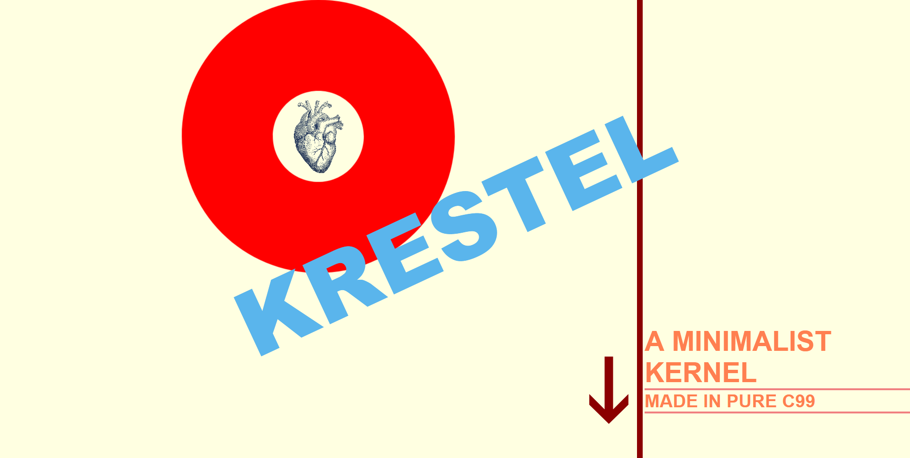
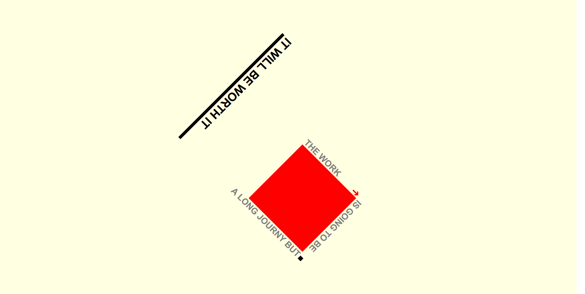
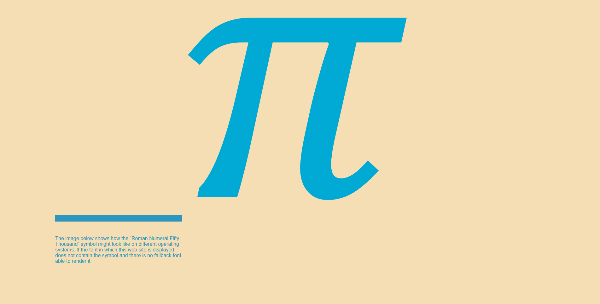
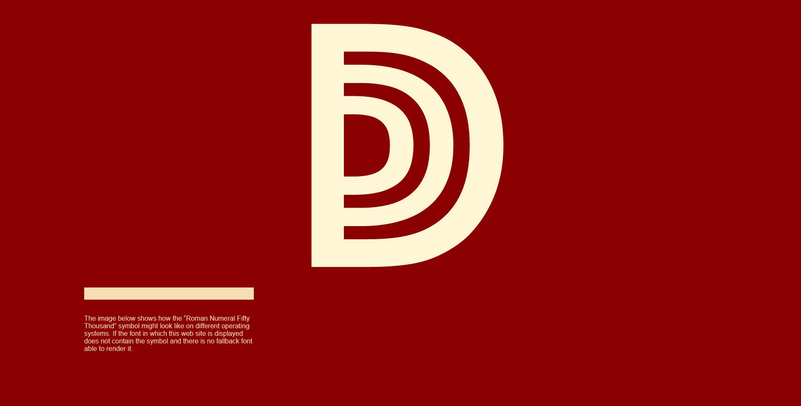

Gallerie
A fashionable site for a minimalist modern kernel called krestel. This kernel was designed to be simple, lightweight and portable. The design of this site aims to convey that through clean lines and a hyper responsive design. It draws it's original inspiration from the work of famed typograph Jan Tschochold.
Visit
This is an experimental site created as a text ground for the new normalized css grid utility. This was originally conceived as a header to be as the banner for a site. A future version could be created, building upon this version, with animation on hover for more interactivity with the viewer. This site also has a responsive design allowing it to morph based on the audience's screen size and orientation.
Visit
A tribute to the number pi. This was a 21th century take on responsive typography. The challenge I set myself when designing this site we to not use any images of vector art or even modern css decoration capabilities, and still obtain an artistic feel. That is why only basic css elements are used, allowing the added benefit of being enjoyable on any bowser, no matter how old. With once again an adaptive layout for best viewing experience.
Visit
A variation on the pi site for roman numbers. The header of the site boasts the little known but quite aesthetically intricate roman symbol for 50000. tribute to the number pi. With once again an adaptive layout for best viewing experience.
Visit